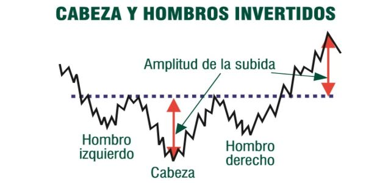

El padre del "Trading armonico"
Harold Gartley nació en Newark, Nueva Jersey en 1899. Gartley recibió su Licenciatura en Ciencias Comerciales y una Maestría en Administración de Empresas de la Universidad de Nueva York. Con los años trabajó en Wall Street como un miembro de la junta, corredor, corredor, analista, asesor financiero y educador. Viajó para dar conferencias sobre el tema del análisis técnico y enseñó en privado a muchos comerciantes prominentes de Wall Street en ese momento.
El curso de análisis técnico de Gartley finalmente se convirtió en una carpeta de tres anillos que se publicó en 1935 y se tituló "Beneficios en el mercado de valores". Originalmente se vendieron menos de 1000 copias. Sin embargo, el precio de venta del curso era alto en ese momento. ¡El curso de Gartley se vendía por $ 1500 en 1935, o el equivalente de tres autos Ford! Es sorprendente pensar que podría vender CUALQUIERA de estos cursos a un precio tan elevado en medio de la Gran Depresión en los Estados Unidos.
Gartley escribió muchos artículos sobre el mercado de valores, pero "Ganancias en el mercado de valores" se considera su mejor trabajo. El libro original se ha convertido en un clásico de análisis técnico y en un artículo de colección.
El libro las “ganancias en el mercado de valores” cubren una amplia gama de temas que incluyen tendencias, teoría de Dow, triángulos, promedios móviles y brechas. Se dice que Gartley ha trabajado más en el tema del análisis de volumen en el mercado de valores que nadie. Cubre una serie de patrones diferentes en el libro, pero pasa más tiempo en un patrón que en todos los demás. Este patrón particular se discute en detalle en la página 222 y hoy se conoce como el patrón de Gartley.
Gartley fue uno de los fundadores de la Sociedad de Analistas de Seguridad de Nueva York y, desde 1947 hasta su jubilación en 1969, trabajó en el campo de las relaciones públicas financieras. Harold M. Gartley falleció en 1972 a la edad de 73 años.

El patrón de Gartley 222
El Gartley 222 es la madre de todos los patrones armónicos. Harold M. Gartley lo presentó en su libro publicado en 1935 “Beneficios en el mercado de valores”, el cual en su forma original era un patrón extremadamente lucrativo.
Su estructura está compuesta por 4 piernas (movimientos) donde las 3 últimas forman una patrón AB=CD. El patrón Gartley comienza con un movimiento impulsivo generalmente en la dirección de la tendencia para luego formar una corrección compleja en forma de AB=CD y completar el patrón dando una señal de entrada a favor de la tendencia.
Un patrón con la estructura como se muestra en la imagen puede ser llamado patrón de Gartley si se ajusta a las siguientes reglas:
- El punto D no puede exceder al punto X.
- El punto C no puede exceder el punto A
- El punto B no puede exceder el Punto X
Otro autor unánimemente reconocido en la disciplina es Scott Carney. Aparte de seguir perfeccionando el patrón Garley, Carney definió nuevos patrones armónicos tales como el Murciélago (Bat), Tiburón (Shark), Cangrejo (Scrab) y el 5-0. Este autor llevó la teoría del trading armónico a un nivel superior, definiendo multitud de aspectos relacionados con la operativa práctica.
Patrón de Gartley alcista

Patrón de Gartley bajista
Combinación de geometría y números de Fibonacci
El trading armónico combina patrones y matemáticas (números de Fibonacci) en un método de negociación que es preciso y basado en la premisa de que los patrones de precios se repiten. En la base de esta metodología está la relación primaria, o algún derivado de la misma (0.618 o 1.618). Las relaciones complementarias incluyen: 0,382, 0,50, 1,41, 2,0, 2,24, 2,618, 3,14 y 3,618.
Mediante la búsqueda de patrones de diferentes longitudes y magnitudes, el inversor puede entonces aplicar las relaciones de Fibonacci a los patrones y tratar de predecir los movimientos futuros. Este método de negociación se atribuye en gran medida a Scott Carney, aunque otros han contribuido o han encontrado patrones y niveles que mejoran el rendimiento.
Derivaciones de los números de Fibonacci
Los números de Fibonacci utilizados en el trading armónico derivan directa e indirectamente de las relaciones primarias 0.618 y 1.618 de la secuencia de Fibonacci. Aunque otros traders y analistas pueden utilizar distintas relaciones porcentuales, la siguiente lista comprende las únicas relaciones o ratios que determinan patrones armónicos precisos.Relaciones primarias:
0.618 y 1.618 (de la secuencia de números de Fibonacci).
Relaciones primarias derivadas:
0.786 = raíz cuadrada de 0.618
0.886 = raíz cuarta de 0.618
1.13 = el inverso de 0.886 (1/0.886)
1.27 = el inverso de 0.786 (1/0.786)
Trading Patrones Armónicos y PRZ
Los patrones armónicos se definen mediante estructuras de precios específicas y se cuantifican mediante cálculos de Fibonacci. Estos patrones representan estructuras de precios que contienen combinaciones de retrocesos y proyecciones de Fibonacci distintos y consecutivos.Si calculamos varios aspectos de Fibonacci de una estructura de precios específica, podemos identificar áreas de patrones armónicos que sugerirán puntos de reversion potenciales en la acción del precio .
Scott M. Carney ha identificado esos puntos de inversión como las Zonas de Reversión Potencial (PRZ) . Un PRZ bien definido, generalmente proporciona algún tipo de reacción inicial durante la primera prueba de la mayoría de los patrones armónicos.

Los patrones armonicos
El trading armónico es la evolucion moderna del estudio del partron Gartley, cuyo nombre le hace homenaje a su creador HM Gartley, quien los definió en 1932.
Los diseños del trading armonico fueron rescritos posteriormente por Scott Carney y Larry Pesavento, queines descubrieron que hay formaciones de reversion y de continuación que especifican el posible movimiento de los precios, a estos nuevos patrones descubiertos se les coloco nombre de animales para simplificar su aprendizaje quedando identificados de la siguiente manera: Mariposa, Cangrejo, Murciélago y Tiburón; Tambien se modernizó el analisis de los patrones ya existentes como el AB=CD y el mismísimo patrón Gartley.
Los patrones armónicos de precios elevan el concepto establecido en el patron original Gartley a un nuevo nivel mediante el uso de los números de Fibonacci para definir puntos de inflexión precisos en el mercado. A diferencia de otros métodos de negociación, el trading armónico intenta predecir los movimientos futuros de los precios con mayor precisión con base en una serie de relaciones numéricas. Este concepto presenta un gran contraste con los métodos comunes y más populares que son reaccionarios y no predictivos ante la acción del precio. Es ahí donde reside la novedad y popularidad creciente del trading armónico.
¿Qué es el trading armónico?
El trading armónico es una metodología que utiliza el reconocimiento de patrones de precios específicos y la alineación de relaciones de Fibonacci exactas para determinar puntos de alta probabilidad de cambios de tendencia en los mercados financieros. Este enfoque asume que los patrones o ciclos en los mercados, tal como muchos patrones y ciclos en la vida, se repiten así mismos de manera regular. La clave está en la identificación de estos patrones, y la apertura o cierre de una posición con base en una alta probabilidad de que la misma acción del precio histórica va a volver a ocurrir.Aunque estos patrones no son 100% seguros (nada en el trading lo es), son formaciones de precios que han sido probadas históricamente con éxito. Si estas pautas son identificadas correctamente, es posible descubrir oportunidades significativas con un riesgo bastante limitado.
Patrón Armónico AB=CD
El patrón AB=CD es una formación de inversión del precio que ayuda a identificar los momentos en que el mercado está a punto de cambiar de dirección. Es uno de los patrones armónicos clásicos , y uno de los primeros en ser identificados (fue descubierto originalmente por H.M Gartley). La idea detrás de este patrón es que se puede comprar cuando los precios son bajos y están a punto de subir (versión alcista del patrón), o vender cuando los precios son altos pero están a punto de caer.
El patrón armónico ABCD está formado por 4 puntos denominados A, B, C y D. Estos puntos definen un estilo o patrón repetitivo de movimiento del precio en el mercado el cual puede encontrarse en todos (o en casi todos) los marcos de tiempo y en todos (o casi todos) los mercados.
Relaciones de Fibonacci en el patrón AB=CD
El patrón gráfico AB = CD debe ajustarse a las relaciones específicas de Fibonacci. A continuación encontrará una lista de los niveles de Fibonacci, que están asociados con el patrón de negociación AB=CD.Hay dos reglas de Fibonacci asociadas con la figura AB=CD:
Cómo operar:
El punto D es el disparador para comprar o vender en un patrón AB = CD. Observa que el punto D es una potencial zona de reversión. Los traders necesitarán una confirmación de una reversión real en esta área. La confirmación puede venir en forma de un patrón de reversión de velas, algun soporte, el fin de una onda de elliot o de lecturas de indicadores técnicos.Take Profit
TP1: Retroceso del 38.2% de AD.TP2: Retroceso del 61.8% de AD.
TP3: Punto A.
Recomendamos utilizar estos niveles junto con el soporte y la resistencia que identifiques en el gráfico utilizando diversas herramientas de análisis técnico. No olvides revisar las temporalidades mayores cuando busques niveles de soporte y resistencia.
Si el precio se ha movido a TP1 rápidamente, lo más probable es que continúe hacia TP2. De lo contrario, si el precio ha sido lento para llegar a TP1, esto podría significar que será el único nivel de TP que obtendrás.
Hay muchos casos en que el mercado se ha revertido después de que el patrón AC=CD ha ido más allá del punto A.
Stop Loss:
En cuanto al Stop Loss, no hay recomendaciones especiales. Puedes colocar un Stop Loss en línea con tus reglas de gestión de riesgos.Consideraciones:
Puedes encontrar muchos patrones AB=CD en un gráfico. Las reglas para el trading de cada uno de ellos son las explicadas anteriormente. Asegúrate de saber cómo aplicar las herramientas de Fibonacci correctamente y sigue todos nuestros consejos.Patrón Armónico ABCD alcista

Patrón Armónico ABCD bajista

El patrón de Gartley
El patrón de Gartley es el patrón armónico más antiguo reconocido. Fue desarrollado y nombrado por el mismo H.M. Gartley. Sin embargo, Gartley no hizo mención a los ratios de Fibonacci para el patrón. Los niveles de Fibonacci fueron agregados después por Scott Carney y Larry Pesavento.
Los patrones de Gartley incluyen el patrón básico AB=CD que está precedido por un máximo o mínimo significativo. Así, el patrón de Gartley está formado por 4 swings del precio. El patrón alcista de Gartley parece similar a una letra M, mientras que el bajista se parece a una W. Las letras para marcar un patrón de Gartley en la tabla son XABCD. La línea XA debe ser la línea más larga del patrón.
Estudiemos el patrón alcista de Gartley (el bajista es su espejo).
Todo comienza en el punto X que puede ser encontrado en una temporalidad mayor y ser parte de una tendencia más grande. Es un mínimo/máximo que es muy distinto y evidente para todos los que están mirando el gráfico. Luego, el precio sube de X a A y hace reversión en A. La pata XA limita el alcance del patrón, y sus otras patas deberían desarrollarse dentro de estos puntos.
- El punto B está en el 61.8% de retroceso de XA. Esta es la condición más importante.
- El punto C puede estar en el 38.2% -88.6% de retroceso de AB.
- El punto D se puede encontrar en la extensión 127.2% -161.8% de AB o en el retroceso de 78.6% de XA.
Cómo operar:
El punto D es el disparador para comprar en un patrón alcista de Gartley. Observa que el punto D es una potencial zona de reversión. Los traders necesitarán una confirmación de una reversión real en esta área. La confirmación puede venir en forma de un patrón de reversión de velas o de lecturas de indicadores técnicos.Take Profit
TP1: 61.8% de CD.TP2: el tamaño de XA proyectado desde D.
Stop Loss:
Se puede colocar un Stop Loss debajo de X para un Gartley alcista (arriba de X para un Gartley bajista) o según tus reglas de gestión de riesgos.Consideraciones:
Ten en cuenta que en la vida real, los patrones que se encuentran en los gráficos a menudo no se ajustan perfectamente a los ratios enumerados anteriormente. Como resultado, cuanto mayor sea la diferencia entre el patrón de Gartley del libro de texto y el patrón que deseas operar, debe tenerse en cuenta el mayor riesgo de error.Patrón de Gartley alcista

Patrón de Gartley bajista

Hombro Cabeza Hombro invertido - Patron Alcista
El Hombro Cabeza Hombro invertido es un patrón muy popular entre inversores de mercados bursátiles. Es una formación gráfica que se manifiesta en los suelos de mercado y puede implicar un cambio de tendencia de bajista a alcista.
En esta figura, los precios forman tres suelos o mínimos: los dos de los extremos suelen ser de un nivel similar, y el mínimo central se encuentra más bajo que los otros dos. El primer mínimo es el hombro izquierdo, el segundo, más bajo, equivale a la cabeza y el tercero conforma el hombro derecho.
La evolución de los precios es equivalente al hombro-cabeza-hombro pero de forma invertida.
El Hombro Cabeza Hombro Invertido se define por dibujar 3 puntos:
- Hombro Izquierdo: se produce cuando el precio del instrumento financiero en un mercado bajista toca un nuevo mínimo y luego crece con una pequeña recuperación.
- a Cabeza: ocurre cuando los precios caen desde lo alto del hombro izquierdo a un nivel aún más bajo y luego sube de nuevo.
- Hombro Derecho: se produce cuando los precios caen de nuevo, pero no tocan los mínimos de la cabeza. El precio sube una vez que haya superado el mínimo del hombro derecho.
Caracteristicas
HCH invertido

Proyeccion del HCH invertido

Hombro Cabeza Hombro - Patron Bajista
La formación de Hombro-Cabeza-Hombro es una figura gráfica que se suele manifestar el final de una tendencia alcista, y puede implicar un cambio de tendencia de alcista a bajista.
En esta figura, los precios forman tres techos o máximos: los dos de los extremos suelen ser de un nivel máximo similar, y el central se encuentra más alto que los otros dos. El primer máximo es el hombro izquierdo, el segundo, más alto, equivale a la cabeza y el tercero conforma el hombro derecho.
Se trata de un modelo muy utilizado por los inversores, ya que es uno de los más fiables de todas las formaciones. También parece ser fácil de detectar. Suele decirse que los inversores novatos frecuentemente cometen el error de ver una formación de Hombro-Cabeza-Hombro en todas partes.
El patrón clásico toma su nombre del parecido a una cabeza humana con dos hombros a cada lado. Un claro ejemplo de esta formación tiene lugar cuando se producen tres picos altos, creados por tres manifestaciones sucesivas en el precio del instrumento financiero.
Caracteristicas

Figura tendencia alcista - Doble suelo o Doble valle
Un doble suelo, también llamado formación en “W”, se considera una señal de tendencia o pauta que indica una posible reversión de la tendencia bajista actual a una nueva tendencia alcista. Tiene una evolución similar, en lo que respecta a la evolución de los precios al doble techo, si bien de forma inversa. Se consideran entre los más comunes de los patrones. Si bien parecen ser fáciles de identificar, el doble suelo debe ser abordado con precaución por el inversor.
Se produce cuando se forman dos puntos o picos invertidos en un gráfico. El doble suelo se forma con dos mínimos o soportes consecutivos a niveles similares de precios a lo que le sigue un movimiento al alza. Por lo tanto, el patrón se completa cuando el valor sube por encima del punto más alto en la formación. El punto más alto se llama punto de confirmación.
VARIACIONES DE LA FIGURA
A veces, los dos picos invertidos que comprende un doble suelo no se sitúan exactamente en el mismo nivel de precios. Esto no implica necesariamente que el modelo sea inválido.Estas formaciones gráficas pueden identificarse, en caso de que prolonguen en el tiempo, a tendencias laterales. En cuyo caso, habrá que atender a la evolución de los precios y a la ruptura de los niveles de soporte y de resistencia relevantes de esta formación.
Caracteristicas
Figura tendencia alcista triple suelo
Pauta similar al doble suelo, el triple suelo es una formación múltiple equivalente a aquél pero con tres o más mínimos, en los cuales el análisis es idéntico al realizado para aquellos, salvo que a medida que se forman nuevos suelos suele disminuir el volumen. Al igual que ocurre con el doble suelo, esta figura indica una posible reversión de la tendencia bajista actual a una nueva tendencia alcista.
El triple suelo se compone de tres picos de mínimos, todos más o menos al mismo nivel de precios. Mientras los mínimos son más agudos y distintivos, los máximos del patrón pueden ser más redondeados. El patrón se completa cuando los precios suben por encima del punto más alto en la formación. El mayor de los máximos se llama punto de confirmación.
Caracteristicas

Figura tendencia bajista doble techo
Un doble techo, también llamado formación en "M", se considera una señal de tendencia o pauta que indica una posible reversión de la tendencia alcista actual a una nueva tendencia bajista. Tiene una evolución similar, en lo que respecta a la evolución de los precios al doble suelo, si bien, de forma inversa. Se consideran entre los más comunes de los patrones. Si bien parecen ser fáciles de identificar, el doble techo debe ser abordado con precaución por el inversor.
El doble techo es una de las más frecuentes y común de las figuras. Es un patrón de reversión de la tendencia al alza en el valor cotizado. Marca una tendencia alcista en el proceso de convertirse en una bajista.
Se produce cuando se forman dos picos agudos bien definidos en aproximadamente el mismo nivel de precios. Los dos techos son distintivos y claros. El patrón se completa cuando el valor cae por debajo del punto más bajo de la formación. El mínimo más bajo se llama punto de confirmación.
Caracteristicas
Figura tendencia bajista triple techo
Pauta similar al doble techo, el triple techo es una formación múltiple equivalente a aquél pero con tres o más máximos, en los cuales el análisis es idéntico al realizado para aquellos, salvo que a medida que se forman nuevos techos suele disminuir el volumen. Al igual que ocurre con el doble techo, esta figura indica una posible reversión de la tendencia alcista actual a una nueva tendencia bajista.
El triple techo se compone de tres picos de máximos, todos más o menos al mismo nivel de precios. Mientras los máximos son más agudos y distintivos, los mínimos del patrón pueden ser más redondeados. El patrón se completa cuando los precios caen por debajo del punto más bajo de la formación. El mayor de los mínimos se llama punto de confirmación.
Caracteristicas
Figura alcista - Suelo Redondeado
Un suelo redondeado, también denominado “platillo”, “sopera” o “suelo durmiente”, se considera una señal de tendencia o pauta que indica una posible reversión de la tendencia bajista actual a una nueva tendencia alcista.
Un suelo redondeado suele ser alargado y en forma de U (a veces parece como un cuenco). Se produce al final de un descenso prolongado en los precios, alcanzando un área de soporte o mínimo en el que los precios permanecen durante un dilatado período de tiempo. El patrón se confirma cuando el precio rompe por encima de su línea de confirmación.
Caracteristicas

Figura bajista: Techo redondeado
Un techo redondeado se considera una señal de tendencia o pauta que indica una posible reversión de la tendencia alcista actual a una nueva tendencia bajista, de forma paulatina o lenta.
Un techo redondeado tiene forma de cúpula, y a veces parece como un cuenco invertido. Tiene lugar cuando, al final de un movimiento al alza, los precios alcanzan un nivel de resistencia o máximo que no logran superar y se mantienen en ese nivel durante un tiempo más o menos prolongado. La pauta se completará cuando la cotización se dirija a la baja tras un tiempo en el nivel de resistencia, rompiendo niveles de soporte. Por tanto, el patrón se confirma cuando el precio rompe por debajo de la línea de confirmación.
Caracteristicas
Bandera alcista
Una bandera alcista se considera una señal de fortaleza, viniendo a indicar que la tendencia alcista actual puede continuar.
Esta figura sigue una fuerte subida o casi vertical en el precio, y consta de dos líneas de tendencia paralelas que parecen formar una bandera rectangular. Dicha bandera puede ser horizontal (como si el viento estuviera soplando) aunque con frecuencia tiene una ligera inclinación o tendencia a la baja.
Caracteristicas

Bandera Bajista
Una bandera bajista sigue una marcada disminución (casi vertical) en el precio, y consta de dos líneas de tendencia paralelas que forman una figura de bandera rectangular. La bandera puede ser horizontal (como si el viento está soplando) aunque con frecuencia tiene una ligera inclinación o tendencia al alza.
La forma de bandera rectangular es el producto de lo que los analistas técnicos llaman la “consolidación”. La consolidación se produce cuando el precio parece rebotar entre un límite superior e inferior del precio. Esto refleja la reacción de los vendedores que están dispuestos a vender a un menor costo, así como la afluencia de compradores que no quieren asumir el precio ya que compiten para comprar al mejor precio posible.
Se confirma la señal bajista cuando el precio rebota más allá de la línea de tendencia inferior de la formación de la bandera, y continúa el movimiento original a la baja del valor. Esto se considera una confirmación del patrón.
Caracteristicas
Un aumento de actividad explica por qué se produce un fuerte repunte en el volumen al final de una bandera. Esto nos da la señal de confirmación. Este repunte de volumen debe ser significativamente superior a la media del volumen de la duración del patrón. Si no fuera así, y el volumen no es notablemente mayor en la sesión de confirmación, podemos estar ante una indicación de que este patrón no se ha completado (sería un breakdown no fiable).